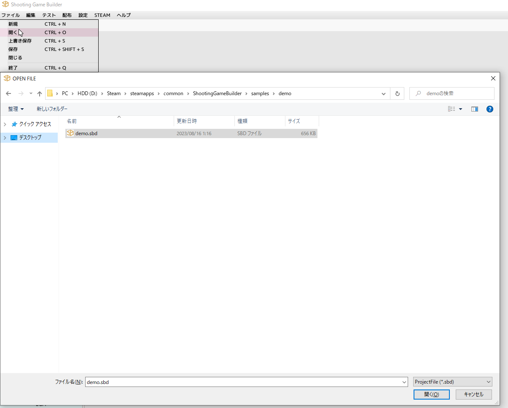

■元のページへ戻る
 Shooting Game Builderがインストールされたフォルダに、サンプルゲーム(G-Scramble)がありますので、そのプロジェクトファイル(demo.sbd)を開きます
その後、メニューの「テスト」→「実行」もしくは、F5キーを押すとテストプレイが開始されます
内容を編集して保存した場合、アプリケーションのアップデートで保存内容が消えてしまいます
ですので改造等を行う前にsamplesフォルダごと余所へコピーしてそちらを編集してください
■ページ上部へ戻る
 ■元のページへ戻る
■元のページへ戻る